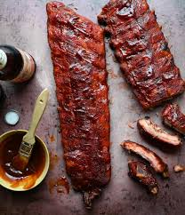

Barbecue Ribs Recipe

Description
Homemade rib marinade is used in this barbecue ribs recipe that's easier than it looks.
I usually cook the ribs the day before and grill them for a quick dinner the next night.
The sauce is much better after it is cooked; it is not a dipping sauce.
Besides, if you are the kind of person who likes including sweet flavors on your food,
this recipe will satisfy you.
Ingredients
- 4 pounds pork spareribs
- 1 cup brown sugar
- ½ cup chile sauce
- ¼ cup ketchup
- ¼ cup soy sauce
- ¼ cup Worcestershire sauce
- ¼ cup rum
- 2 cloves garlic, crushed
- 1 teaspoon dry mustard
- 1 dash ground black pepper
- cooking spray
Steps
- Preheat the oven to 350 degrees F (175 degrees C).
- Cut spareribs into serving size portions; wrap in double thickness of foil.
- Bake in the preheated oven for 1 ½ hours. Unwrap and drain drippings.
Place ribs in a large roasting pan.
- Mix brown sugar, chile sauce, ketchup, soy sauce, Worcestershire sauce, rum, garlic, mustard, and pepper together in a bowl.
Coat ribs with sauce and marinate at room temperature
for 1 hour or refrigerate for 8 hours to overnight.
- Preheat the grill to medium heat.
Position the grate 4 inches above heat source; grease the grate with cooking spray.
- Cook ribs on the preheated grill for 30 minutes, basting with marinade.
Back